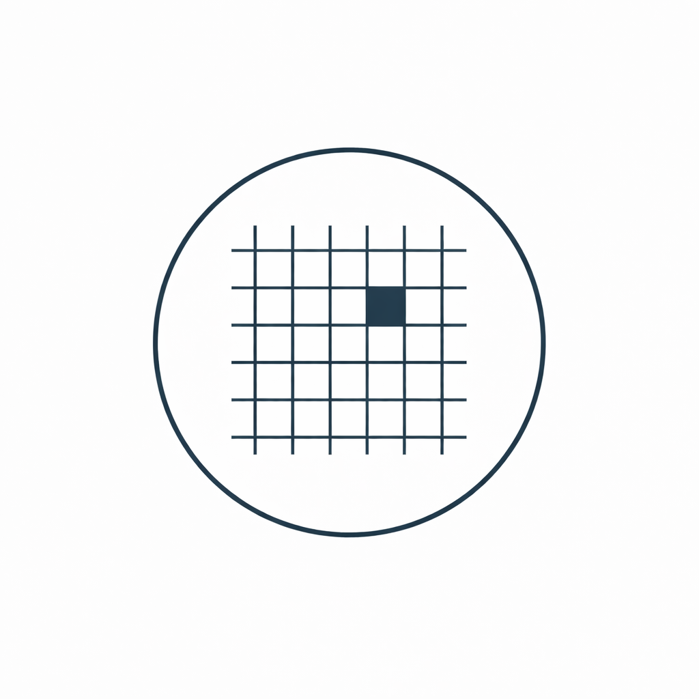
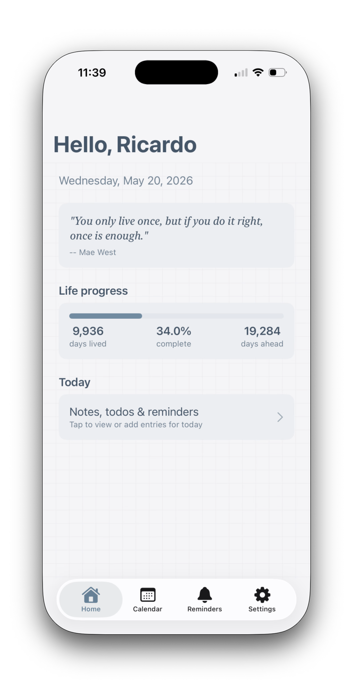
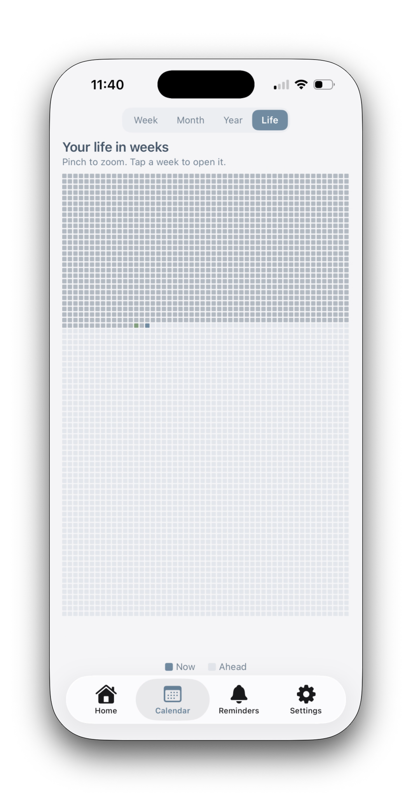
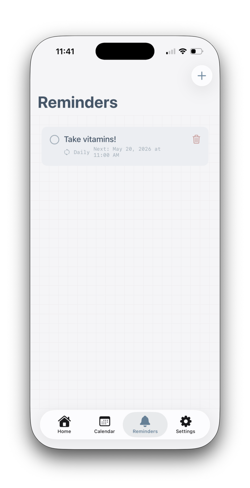

A minimalist daily journal and life planner for iOS.



Capture your thoughts each day with a simple, distraction-free writing experience.
Visualize your life in weeks, months, and years — a reminder of what matters.
Set recurring reminders with flexible recurrence options and local notifications.
Start each day with an inspiring quote to set the tone.